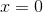

Funcția logaritmică
Fie  cu
cu  .
.
Definiația FE37: Funcție logaritmică
Funcția  ,
,  se numește funcție logaritmică de bază
se numește funcție logaritmică de bază  .
.
Exemplu:
Verificăm dacă funcția logaritmică este funcția inversă a funcției exponențiale.
Avem funcția logaritmică dată în definiția de mai sus și funcția exponențială  .
.
Verificăm ralațiile date în Definiția FE20:
 .
.
.
În rezolvarea de mai sus am folosit proprietățile logaritmilor, pe care le poți găsi accesând pagina Proprietățile logaritmilor, din cadrul eBook-ului Ghid | Logaritmi.
Așadar, putem afirma că într-adevăr, funcția logaritmică este inversa funcției exponențiale.
Graficul funcției logaritmice
Cum funcția logaritmică este inversa funcției exponențiale, graficul acesteia este simetric față de graficul funcției exponențiale.
Astel, în graficele de mai jos vom reprezenta funcția logaritmică folosind simetria față de prima bisectoare pentru  și
și  .
.
În primul grafic reprezentăm cu roșu funcția logaritmică , , cu , cu albastru funcția exponențială  , iar cu linie punctată este reprezentată prima bisectoare.
, iar cu linie punctată este reprezentată prima bisectoare.

În cel de-al doilea grafic avem reprezentată cu linie punctată prima bisectoare, cu roșu funcția logaritmică , , cu , iar cu albastru funcția exponențială .

Observație:
Din cele două grafice se poate observa că dreapta  este asimptotă verticală la dreapta, la graficul funcției date. Pentru a-ți aminti despre asimptota verticală, te sfătuim să accesezi pagina Asimptote ale graficului unei funcții, din cadrul eBook-ului Ghid | Limite de funcții.
Proprietăți ale funcției logaritmice
Propoziția FE38: Intersecția funcției logaritmice cu axele de coordonate
Fie funcția , , cu .
- Intersecția graficului funcției
 cu axa
cu axa  este punctul
este punctul  .
. - Intersecția graficului funcțiai cu axa
 este mulțimea vidă, deoarece axa este asimptotă verticală la graficului funcțiai .
este mulțimea vidă, deoarece axa este asimptotă verticală la graficului funcțiai .
Reprezentarea grafică a funcției logaritmice:
- , , cu :

- , , cu :

Propoziția FE39: Monotonia funcției logaritmice
Fie funcția , , cu .
Atunci, avem următoarele două cazuri:
- pentru , funcția este strict crescătoare pe mulțimea
 .
. - pentru
 , funcția este strict descrescătoare pe mulțimea .
, funcția este strict descrescătoare pe mulțimea .
Pe graficele de mai sus observăm următoarele: în primul grafic funcția crește, iar în cel de-al doilea grafic funcția descrește.
Propoziția FE40: Convexitatea și concavitatea funcției logaritmice
Funcția logaritmică , , cu este:
- convexă pe mulțimea pentru
 .
. - concavă pe mulțimea pentru .
Se observă, în imaginile de mai sus, că în primul caz, graficul funcției logaritmice nu „ține apa”, ceea ce înseamnă că funcția este concavă, iar în cea de-a două imagine, graficul „ține apa”, adică funcția logaritmică este convexă.
Propoziția FE41: Bijectivitatea funcției logaritmice
Funcția logaritmică este o funcție bijectivă.
Demonstrație:
Fie funcția exponențială 0, \ a\neq 1">.
Am văzut în paginile anterioare că funcția exponențială este bijectivă și, prin urmare, inversabilă, iar inversa sa este funcția logaritmică, ceea ce înseamnă că și funcția logaritmică este o funcție bijectivă.
Observație:
Fiind o funcție bijectivă, funcția logaritmică este și inversabilă, având inversa funcția exponențială.
Semnul funcției logaritmice
Pentru a stabili semnul funcției logaritmice, trebuie să comparăm expresia funcției cu  (zero).
(zero).
Astfel analizăm următoarele trei cazuri:
- Avem dacă și numai dacă
 ;
; - Avem
 dacă și numai dacă: 1"> și sau
dacă și numai dacă: 1"> și sau  și ;
și ; - Avem dacă și numai dacă: și sau 1"> și .
De reținut!
 Un logaritm este pozitiv, dacă atât baza, cât și argumentul sunt ambele subunitare sau ambele supraunitare;
Un logaritm este pozitiv, dacă atât baza, cât și argumentul sunt ambele subunitare sau ambele supraunitare;
Un logaritm este negativ, dacă baza și argumentul sunt una subunitară și alta supraunitară.